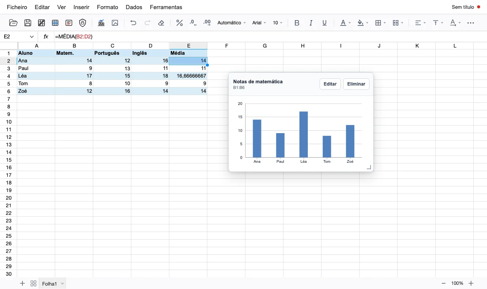

Manual do utilizador do DocCells
O DocCells é uma folha de cálculo multilingue que se usa no navegador, sem instalação nem conta. Abre e guarda livros do Excel (.xlsx).

O essencial em seis gestos
| Para | Fazer |
|---|---|
| Introduzir dados | clicar numa célula, escrever, Enter (introduzir dados) |
| Calcular | escrever = e a fórmula: =MÉDIA(B2:B6) (as fórmulas) |
| Copiar uma fórmula | arrastar a alça azul da seleção, ou Ctrl D (preencher) |
| Formatar | menu Formato, ou os botões (formatação) |
| Traçar um gráfico | selecionar os dados, (gráficos) |
| Guardar | Ctrl S: um ficheiro Excel (abrir e guardar) |
Sumário
- Abrir e guardar: ficheiros, recentes, recuperação, Google Sheets, idioma.
- A interface: menus, botões, barra de fórmulas, separadores, zoom.
- Introduzir dados, selecionar, copiar, preencher.
- As fórmulas, listas e complexos, intervalos com nome, as folhas.
- Formatos de número, formatação, formatação condicional, linhas e colunas.
- Ordenar, filtrar, procurar, caixas, listas e calendário, gráficos e sparklines, imagens e ligações, imprimir.
- Proteger um livro para alunos, partilhá-lo e integrá-lo, usá-lo com o DocGeo.
- Referência: as 314 funções, atalhos, compatibilidade com o Excel, perguntas frequentes.
Convenções
- Os botões são indicados pelo seu ícone ( negrito).
- Ctrl equivale a ⌘ no Mac.
- As fórmulas estão escritas em português: nomes de funções em português, vírgula decimal, ponto e vírgula entre os argumentos. O DocCells mostra-as no idioma da interface.
- Pesquisar no manual: / ou Ctrl K. As palavras escrevem-se em qualquer ordem e sem acentos; o nome de uma função, em português ou em inglês, leva à sua linha.